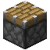

Crafting and automation: pages
Crafting and automation
Fabricators and Gateways
The machines that carry schematics out - the Fabricator for crafting recipes, the Gateway for other machines' recipes - and their rack forms.
On this page
A schematic on its own does nothing: it has to be in a machine that can carry it out. These machines are the network's crafting providers. A Scheduler running a job hands each step to a provider holding the right schematic, along with the ingredients, and gets the result back.
| Provider | Takes | Does the work |
|---|---|---|
| Crafting Schematics | Itself, like a crafting table | |
| Processing Schematics | The machines next to it (a furnace, a press, another mod's machine) | |
| Crafting Schematics | Itself, in a Server Rack | |
| Fabrication Blade | (the Blade Enclosure's schematic slots) | Itself, in a Blade Enclosure |
| Midrange System | Recipes on its diskettes | Itself (see The Midrange line) |
A schematic's item becomes craftable on the network as soon as a provider holds it. You can see every provider and its schematics in a Schematic Terminal.
Several machines with the same schematic#
Put the same schematic in several providers and they share the work. Each run of a step goes to the least busy provider holding its schematic (the one with fewest crafts taken and not yet returned; on a tie, the first in network order). So two identical Fabricators split a job's crafts between them, and a second job's crafts go to whichever machine is idle rather than queueing behind the first's. More on how many crafts a job keeps going at once is on Schedulers.
Fabricator#
A Fabricator carries out Crafting Schematics. It has nine schematic slots and two  Throughput Module slots.
Throughput Module slots.

encodedlogistics:fabricator
- It's a network device: one lane, and
autocrafting.fabricatorDrain(default 1) FE a tick while its network runs. Cables connect on every face but the front window. - It takes every craft the Schedulers offer it and runs them side by side: it has no queue of its own.
- Each craft costs
autocrafting.fabricatorEnergyPerCraft(default 50) FE and takes the ticks inautocrafting.fabricatorCraftTicks(default [20, 10, 5]): the first value with no Throughput Modules, then with one and two. It pauses while offline. - The result and any leftovers (empty buckets, say) go back to the job. Break it mid-craft and the ingredients go back to their jobs.
The screen shows the schematics, the module slots, a progress arrow and Working or Idle; the block lights while it works.
Screenshot needed
The Fabricator screen with five Crafting Schematics, two Throughput Modules, and the progress arrow part way
docs/site-src/images/crafting/fabricator-gui.png · 1280x720
Gateway#
A Gateway runs Processing Schematics through the machines next to it. Place it touching a furnace, a Lithography Press, or any other mod's machine with an item (or fluid) inventory, and put the schematics for that machine in it.
encodedlogistics:gateway
It's a network device: one lane, autocrafting.gatewayDrain (default 1) FE a tick. It shows as active while it moved items in the last second.
A run#
Each time a job needs a step done, the Gateway:
- Pushes the inputs into whichever neighbours accept them, through the face that touches the Gateway. Fluids and gases go into the neighbours' tanks the same way.
- Waits for the outputs. Machines can push them back into the Gateway (it takes only outputs its runs are waiting for), or it pulls them out of its neighbours every 10 ticks: through the touching face first, then the others (a furnace gives up its result only from below).
- Hands each output to its job as it arrives. The run is done when they've all come back.
Only one run pushes inputs at a time: the next starts once the last one's inputs are all in a machine, so two runs' ingredients don't get mixed in one machine. Up to 64 runs can be waiting for outputs at once.
Outputs that reach the network some other way (an Egress Port under the machine, an Inventory Tap) still go to the waiting job: jobs claim incoming items whichever way they arrive.
A Stonecutter
A Stonecutter has no inventory, so a Gateway beside one cuts for it: a run whose input is one item and whose output is one item a stonecutting recipe makes from it is cut by the Gateway at once. Anything cut beyond what the job wanted goes to the network.
Keep stocked#
The Gateway's Keep stocked row has nine ghost entries, each with an amount. Every second it tops its buffer slots up from the network to those amounts, and puts any excess back. Neighbours can take from the buffer (but not put into it), so a machine that pulls its fuel or a catalyst from the Gateway always has it.
Machines over the air#
With Arcforge installed, a Gateway can also feed machines that have a  Small Wireless Bridge on them, without touching them: set the bridge's Gateway to this Gateway's name (GATEWAY01 and so on). Bridged machines are fed and emptied the same way, after the neighbours, and only through their own slots' rules. See Arcforge.
Small Wireless Bridge on them, without touching them: set the bridge's Gateway to this Gateway's name (GATEWAY01 and so on). Bridged machines are fed and emptied the same way, after the neighbours, and only through their own slots' rules. See Arcforge.
In a rack#
- The Fabrication Server is a Fabricator in a Server Rack (2U): nine Crafting Schematic slots and two Throughput Module slots, working exactly as a Fabricator does, at
rack.fabricationServerDrain(default 4) FE a tick plus the energy per craft. The network's rack Scheduler offers its crafts to Fabrication Servers first. See Rack devices. - Fabrication Blades in a Blade Enclosure craft from the enclosure's nine schematic slots; more blades make the crafts quicker. See Modular chassis.